ESI
Earth and Space Institute (ESI) – UMBC
The Earth and Space Institute at the University of Maryland, Baltimore County focuses on Earth observation and atmospheric research, with strong work in aerosols, clouds, and climate science.
Current Research Highlights:
ESI contributes to NASA missions and campaigns, including HARP2 on PACE and the 2026 INSPYRE campaign studying wildfire-driven pyrocumulonimbus storms using the AirHARP2 instrument suite.
Maryland Aerospace Industry and Education Roundtable (Oct 23, 2024):
ESI faculty, interns, and students attended the roundtable at the University of Maryland, College Park to connect with aerospace industry leaders, state representatives, and federal partners including NASA and NOAA, supporting collaboration and STEM workforce opportunities.
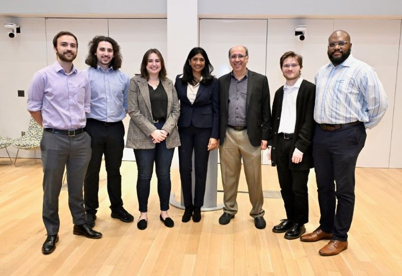
Read the full post: ESI joins the Maryland Aerospace Industry and Education Roundtable.
Programs and Resources:
The institute shares project pages, publications, instrumentation efforts, news updates, and academic resources through its site. Learn more at esi.umbc.edu.
Flatfield
SWIR Flatfield Sensor Calibration (ESI @ UMBC | 10/2024–08/2025)
Built and maintained a production-ready Python calibration pipeline for AirHARP2 SWIR sensor data, focused on improving radiometric consistency before downstream Level-1A processing.
Mission Context:
This work supported Earth-observation instrument readiness and analysis for AirHARP2 SWIR operations, including calibration workflows documented in the 2025 AirHARP2 SWIR calibration deck.
What I Implemented:
(1) dark-frame averaging and subtraction to remove bias/thermal noise, (2) composite generation with equalized sampling across degree positions, (3) flatfield characterization normalized to mean response, (4) quadratic envelope modeling across cross-track and along-track line cuts, and (5) outlier rejection using sigma filtering with Savitzky-Golay smoothing for robust profile fitting.
Signal Analysis & Quality Controls:
Developed 1D profile extraction, parabola-core/FWHM-style region analysis, curve-fit diagnostics, defective-pixel handling via median-filter replacement, and corrected-image clipping to 14-bit sensor bounds for consistent output integrity.
Pipeline Architecture:
Modular processors separate image ingestion, composite generation, and flatfield application. The CLI entrypoint accepts wheel position and smoothing controls, then generates quadratic-envelope and pixel-response characterizations for repeatable calibration runs.
Flatfield - Method:
Quadratic envelope fitting, ratio-based thresholding, outlier rejection, and smoothing for stable full-FOV correction.
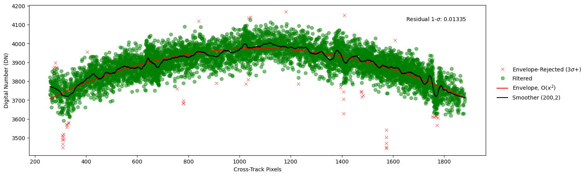
Quadratic fit to signal envelope.
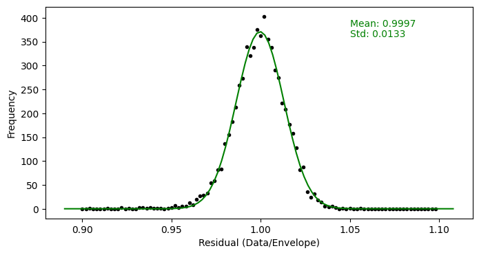
Histogram ratio thresholding and outlier rejection.
Defects and Multiplicative Mask:
Mask derivation and defect visibility analysis from large-scale averaged calibration data.
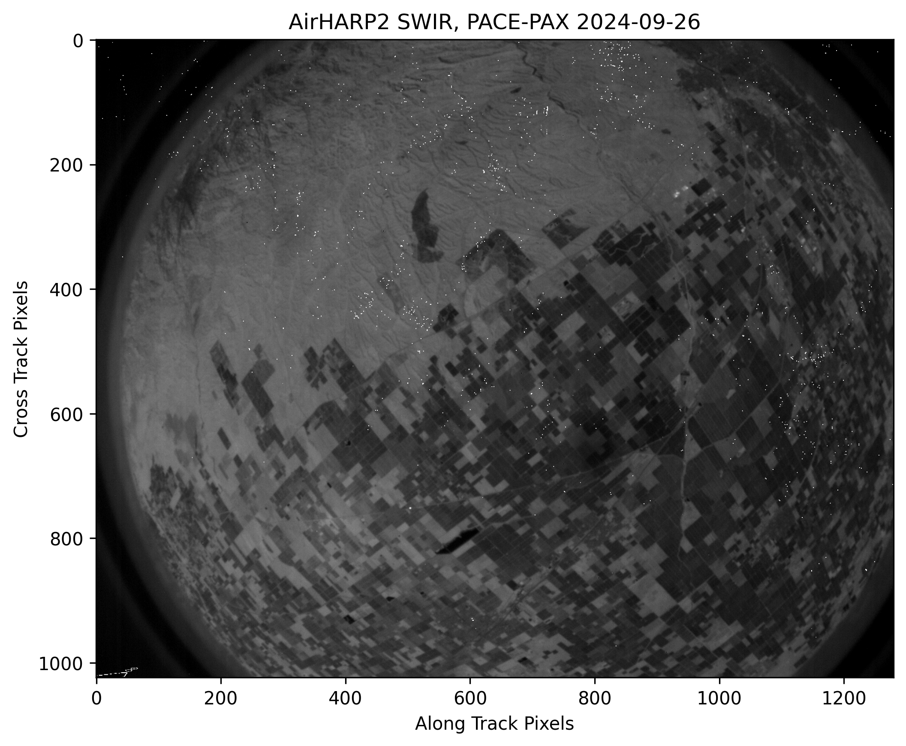
Defects and Multiplicative Mask — derived mask view.
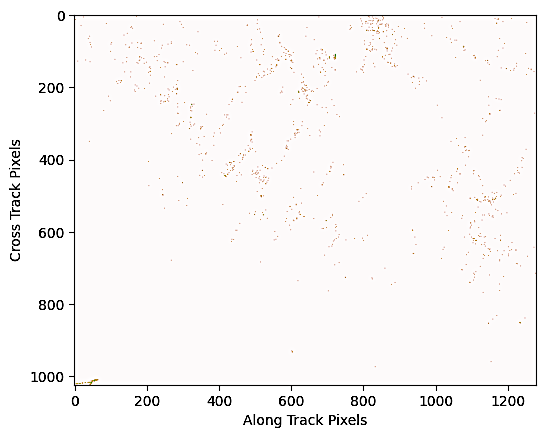
Defects and Multiplicative Mask — raw image defect view.
Mask Applied + 1st Order Visual Correction:
Application of the multiplicative mask and first-order correction steps, including local gap filling.
Mask Applied + 1st Order Visual Correction.
Tech Stack: Python, NumPy, SciPy, Matplotlib, PIL, NetCDF4/HPC-aligned workflows
Project Artifacts:
AirHARP2 SWIR Calibration Deck (PDF)
README.md
SWIR L1A
SWIR L1A Generation Pipeline
Production workflow for converting AirHARP2 SWIR raw TIFF frames into Level 1A NetCDF4 granules for mission analysis and archival.
Key Contributions:
Implemented CFC-capture-ID metadata matching, chronological frame processing, and filter-position-aware data organization across the SWIR processing modules.
Granule Controller:
Automated flight-leg detection from timestamp gaps, then segmented data into standard 5-minute (300 second) granules with support for parallel job execution.
Metadata + Image Matching:
Matched `.tif` images to `.meta` records by capture ID and exported aligned TEC temperature, filter position, and integration-time fields for each processed frame.
Workflow Focus:
Data ingest, corrupted-file filtering, time extraction from CFC IDs, and reproducible Level 1A output generation with robust logging and progress tracking.
Tech Stack: Python, NumPy, Pandas, NetCDF4, Pillow (PIL), argparse, multiprocessing
NetCDF4 Product Content:
Unified frame-based image storage (`sensor1`), timing variables (`time_stamp`, `JD`, `seconds_of_day`), sensor state (`filter_wheel_position`, `integration_time`, `sensor_temperature`), and navigation groups for attitude/orbit records.
Panoply + NetCDF Demonstration:
Example Panoply views of the generated SWIR L1A NetCDF file, including variable tree inspection and rendered sensor image output.

Panoply dataset browser showing SWIR L1A NetCDF groups, variables, and metadata layout.
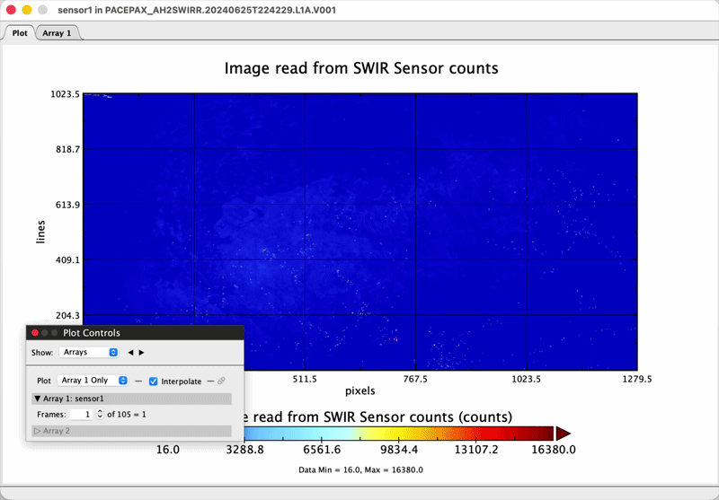
Panoply rendering of sensor1 counts from a generated SWIR L1A NetCDF granule.
Project Artifact: SWIR L1A README
Coaching
Coaching – Soccer Association of Columbia (SAC): 08/13–Present
Current assignment (Fall 2025/Spring 2026): listed on SAC Travel Coaches as coach for Boys 2017 Pre-MLS NEXT United Gold. See SAC Travel Coaches (2025/2026).
Tournament Win: Boys 2017 United Gold were SAC Columbus Day Tournament Champions (all wins, 27 goals scored, 2 conceded). View post.
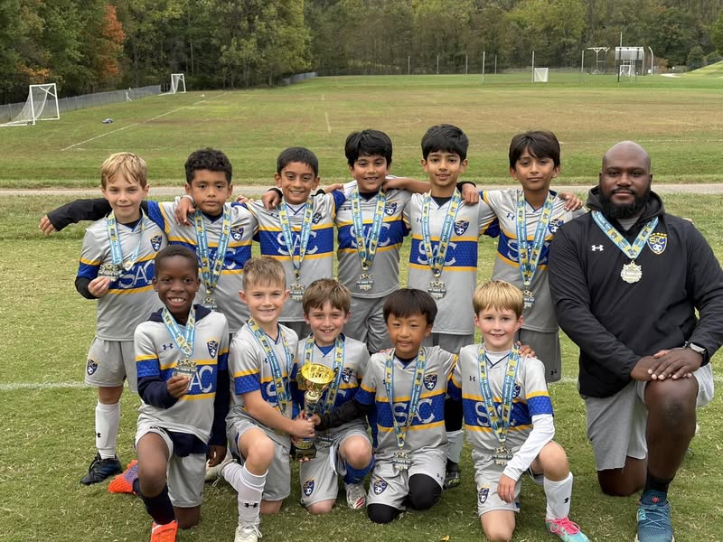
Tournament Win: Boys 2017 United Gold with Coach Marc won their bracket in the Celtic Cup tournament, finishing an exciting final 7–4. View post.
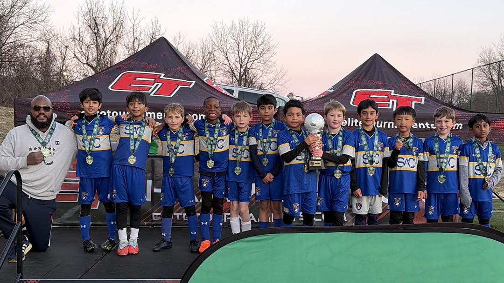
Coaching background includes boys travel/select teams across U9 through U14 age groups, with roster sizes ranging from small-sided development formats to full-sided competitive teams.
Coach of the Year: Recognized by SAC (see 2024 SAC AGM).
I have coached seven seasons of competitive soccer and earned my USSF National D license. I am a product of SAC/HC's youth select program and played for Mount Saint Joseph High School.
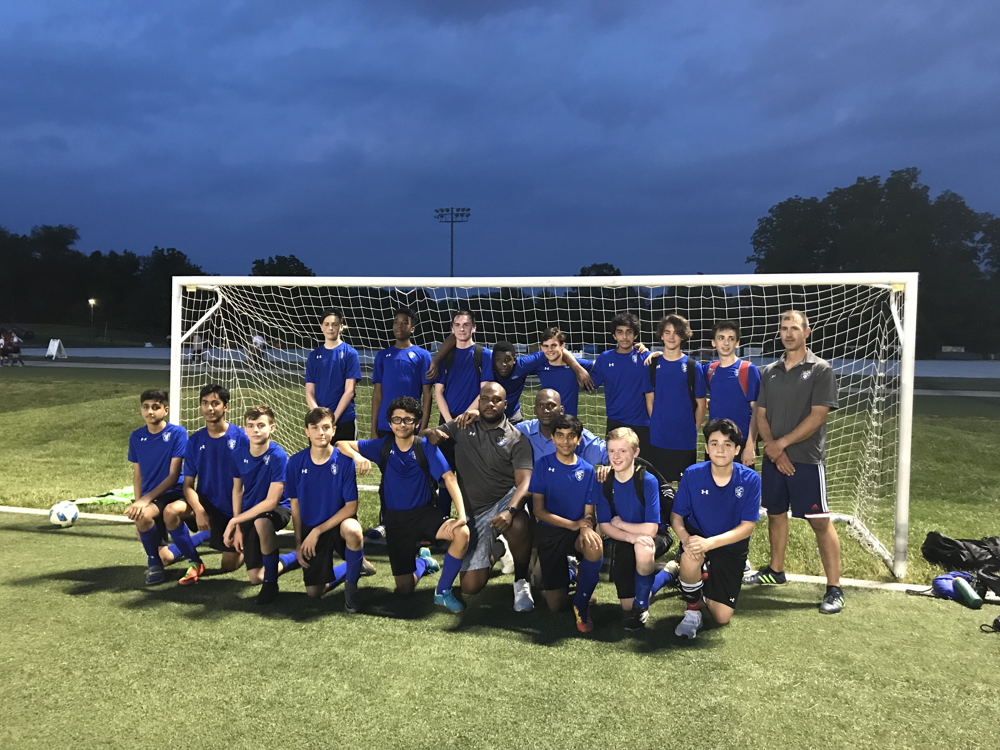
My goal is to pass along the knowledge I have gained as both a player and coach, while helping players build technique, tactical awareness, teamwork, and sportsmanship.
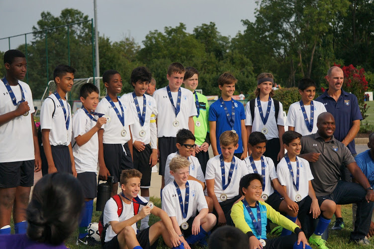
I continue to invest in coach education and apply new training methods to support long-term player development on and off the field.
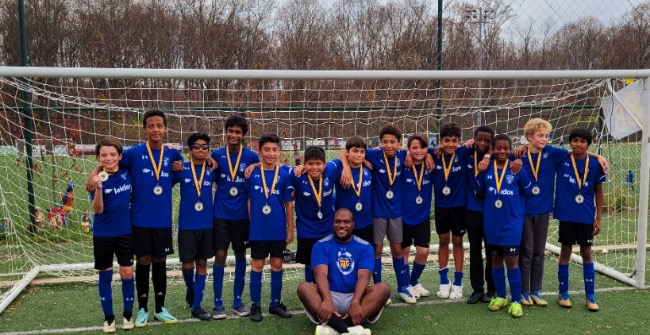
Education
University of Maryland Global Campus
BS, Computer Science
Jan 2021-Dec 2025
University of Maryland Global Campus
Undergrad Certificate, Vulnerability Assessment
Jan 2022-May 2023
University of Maryland Baltimore County
Mathematics and Computer Science
Fall 2009-Spring 2011
Mount Saint Joseph High School
High School Diploma
About
Software developer focused on scientific data pipelines and full-stack engineering.
Over the last few years, I have focused on Earth-observation work at UMBC's Earth and Space Institute, where I developed Python workflows for AirHARP2 SWIR processing from calibration through Level 1A product generation.
In the Flatfield project, I built and maintained calibration tooling for dark-frame correction, composite generation, defect masking, and quadratic-envelope-based flatfield normalization because I care about producing clean, reliable data for downstream analysis.
In the SWIR L1A project, I implemented metadata/image matching by capture ID, chronological frame processing, flight-leg segmentation, and 5-minute NetCDF4 granule generation for reproducible mission analysis and archival.
Core Stack: Python, Java, JavaScript, SQL, HTML/CSS, React, Node.js, Flask, NumPy, SciPy, Matplotlib, NetCDF4, Git, Docker
Alongside research software work, I also build web applications and bring a coach's mindset to engineering: clear communication, repeatable systems, and continuous improvement.
While I was in school, I worked as a security guard at UMBC to help put myself through college, and that experience shaped my work ethic, discipline, and sense of responsibility.
Resume: Charlemagne_Resume_2026.pdf
Contact